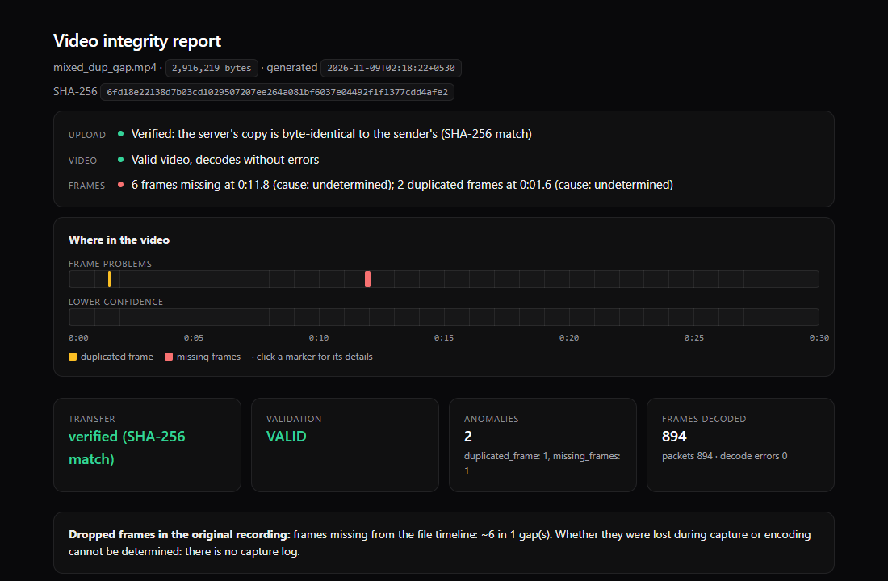

A 30 s video over a 20–100% network, accepted only when every byte matches.
Sreenandh Sudheesh Puthalath
The backend checks the whole-file SHA-256 before it touches the video, then decodes every frame, finds
missing, duplicated and damaged frames at 30 FPS, and says whether the evidence points to transfer, capture or
encoding.
50/50
uploads finished intact under 10 bad-network scenarios, SHA-256 matched every time
0.933
recall: share of 223 known faults found in 120 held-out videos
0.995
precision: 1 false alarm in 194 detections
82
automated tests, one command: pytest -q
75faults injected mid-transfer
0damaged or partial files accepted (16 tests)
0false alarms on 25 clean videos
5real browser recordings, incl. iPhone
Three rules the system never breaks
Accept only intact filesCOMPLETE only when the server's SHA-256 of the whole file equals the client's
Analyse only accepted filesthe analysis can open a file only through a check that refuses anything else
Never guess the causeno evidence → "cannot determine", never "no drops"
1 · How it worksnSEPIA technical challenge · Confluentia 2026
One recovery rule: ask the server, continue from there
The upload is cut into chunks. The server keeps only a contiguous, verified prefix of the file, so after any
failure the right place to continue is simply the number of bytes it holds.
An upload, step by step
Open a session. The client declares the file size and its SHA-256.
Send chunks. Each goes to a byte offset with its own SHA-256. A damaged chunk is refused; an identical re-sent chunk changes nothing.
Store safely. The server writes the chunk, calls fsync, and only then records the new offset in SQLite, so the recorded offset is never ahead of the disk.
Recover. Lost network, timeout, client crash or server crash: the client asks for the offset and continues.
Finalize. The server re-reads and re-hashes the whole file. Only a match gives COMPLETE; analysis starts automatically.
Behaviour on a bad link
chunk size 64 KB – 8 MB, doubles after a success, halves after a failureretry: exponential backoff, full jitter, cap 30 sno progress for 20 s → drop the connection, retryup to 15 failures in a row before giving up
Server states
UPLOADING
chunks arriving
STALLED
no completed chunk for 30 s: a timer, not a verdict
FAILED
no chunk for 24 h: session closed
COMPLETE
whole-file SHA-256 matches
REJECTED
assembled file does not match: never analysed
COMPLETE ⇔ SHA-256(file on server disk) = SHA-256(file the client declared)
A real recovery, from the raw log (interruption scenario, run 1)
1Sendchunk at byte 1,310,720 (512 KB)
2Cutthe server stores it; the connection drops before the reply
3Askclient retries: "how many bytes?" → 1,835,008
4Continuefrom 1,835,008. Nothing sent twice
Intact · Sreenandh Sudheesh Puthalath2 / 6
2 · Transfer under bad networksnSEPIA technical challenge · Confluentia 2026
50 of 50 uploads arrived byte-perfect
Run on a separate Linux laptop: netem shapes a private virtual link in both directions, Toxiproxy cuts,
resets and hangs connections. Each fault fires when the client's own log shows a set fraction of the file sent, so it
always lands mid-transfer. Test video 3,756,860 bytes, chunks up to 512 KB.
100%
20 Mbit/s · 20 ms RTT · 0% loss
60%
5 Mbit/s · 80 ms RTT · 1% loss
20%
500 kbit/s · 400 ms RTT · 5% loss
Measured before the runs: ping 22.2 ms at 100%, 401.7 ms at 20%.
Upload time per scenario: median of 5 runs, whiskers min–max (log scale)
13times a chunk arrived but its acknowledgement was lost. The client asked, skipped ahead, and never sent that chunk twice.
≤ 512 KBre-sent after the server was killed (SIGKILL) mid-upload and restarted, over 5 runs.
140–200 kbit/sis what the 20% link really carries (5% loss, 400 ms). Every upload still completed, in 152–217 s.
Checked separately from the harness: in every run the acknowledged chunks plus the server's resume
offsets cover exactly bytes 0 to 3,756,860. 151 retries in total, 0 harness errors.
What the fault scenarios do
Fluctuating 100↔20% 100 → 60 → 20 → 60 → 20 → 100% at 15, 30, 50, 65, 80% of the file
10 s outage 60% link; at 30% every connection is cut and refused for 10 s
Network switch 100% link drops for 3 s at 40% and returns as a 20% link (client address unchanged)
TCP resets ×3 60% link; every connection reset (TCP RST) for 2 s at 25, 50, 75%
30 s hangs ×2 60% link; data silently dropped for 30 s at 30% and 60%, longer than the 20 s stall timeout
Client killed client process SIGKILLed at 40%, restarted 2 s later
Server killed server process SIGKILLed at 40%, restarted 3 s later
24 kinds of faulty 30 s video with known ground truth. Thresholds were tuned on seed 1, the code frozen,
then seeds 2–6 (120 new videos) scored once. Every miss is listed in the repository.
0.933
recall
0.995
precision
100%
of videos judged valid / invalid correctly
0
false alarms on 25 clean control videos
Recall by anomaly type
How a file is checked
Validate: ffprobe reads the container and streams.
Decode everything: PyAV decodes every frame and records every decoder message; the ffmpeg CLI decodes again as an independent check.
Detect on real timestamps: gaps, repeats, jitter, damage, truncation; each with time, frame indices, evidence, confidence.
Then 30 FPS: map each slot to a source frame; repeats made by that conversion are labelled artefacts, not defects.
What it misses, and why
6
byte flips that decode without any error and leave no visible trace (damage in transit is caught by the hash)
4
frames dropped with re-generated timestamps: no gap left, only a motion jump
3
duplicates in near-still scenes, where a repeat looks like no motion
2
timing jitter just under the 25% threshold
What one finding looks like (from the sample report)
missing_frames11.833 – 12.067 sframes 355–356confidence: high
“interval 233.33 ms = 7.00x nominal 33.33 ms; ~6 frame slot(s) empty between 11.8333s and 12.0667s with no packet in the container”
likely cause undetermined · candidates capture, encoding · ruled out
transfer (the hash matched)
A matching hash rules out the network. The frame log tells capture from encoding.
The browser page logs every frame that reaches it (requestVideoFrameCallback) and uploads the log
with its own hash. The log is aligned to the file by a time search, and used only when the frame pattern or a shared gap
pins the offset down; otherwise the report says the alignment is ambiguous.
Found in real recordings
Run
Evidence
Verdict
Webcam, desktop Chrome
3.3 s gap (102 frames) at 0.30–3.60 s, in the file and the log
capture
Webcam, desktop Chrome
2 frames shown in the page but missing from the file
encoding
Injected 0.5 s source stall
file gap 10.046–10.575 s; log gap 529.5 ms with no frames inside
capture
iPhone, Safari
899/899 frames aligned, 0 delivery gaps; recorder started in 3 ms (Chrome: 1.5–3.8 s)
no drops
The recording page
Record 30 s, watch it upload in verified pieces, read the verdict. Animations stop while recording and
uploading so they never compete with the frame log.
A 30 s video with frame 47 repeated twice and frames 356–361 removed, uploaded through the system. No
capture log exists for this file, so the cause stays undetermined rather than guessed.

docs/samples/mixed_dup_gap.html. Also in the samples: a file cut to about half (VALID_WITH_ERRORS,
truncation located at 15.33 s) and a text file named .mp4 (INVALID).
Limits, stated plainly
A perfect transfer does not prove a clean recording. Frames dropped before encoding with new timestamps leave no gap.
The frame log is written by the client: its integrity is checked, its authenticity cannot be. Resolution about 17 ms.
Detector thresholds are fixed; near-still scenes and silent byte flips are its known misses.
Network conditions were emulated. I did this alone during end-semester exams, which left no time for a real
mobile-network or real connection-switch test. Next test: server on a second computer, both on one router, the laptop
switching between its 2.4 and 5 GHz networks mid-upload so its address really changes. Pass: COMPLETE, hashes match,
at most one chunk re-sent.
Not tested: Firefox, the browser client under netem, resuming after a page reload. No authentication.